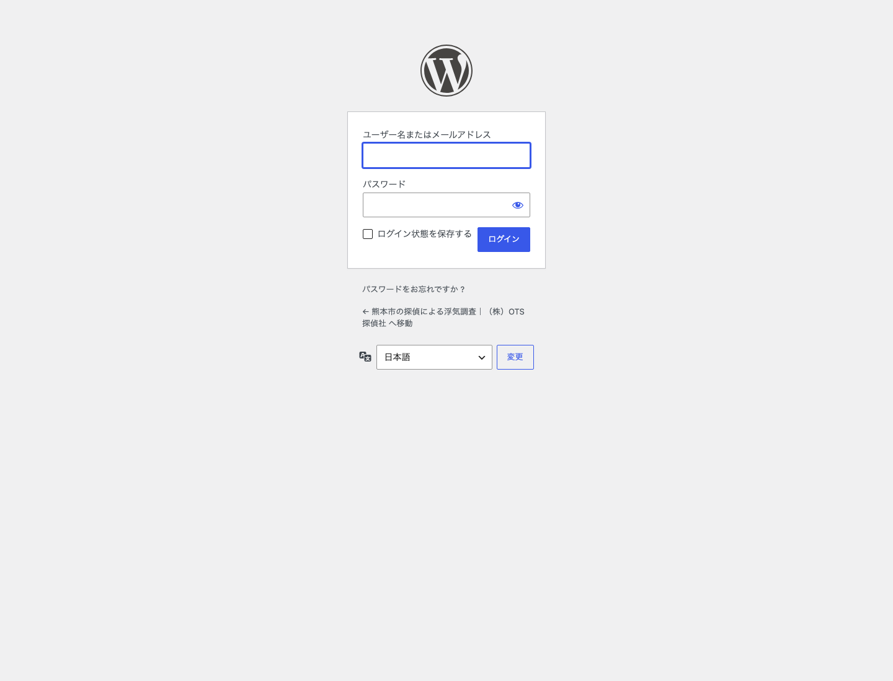
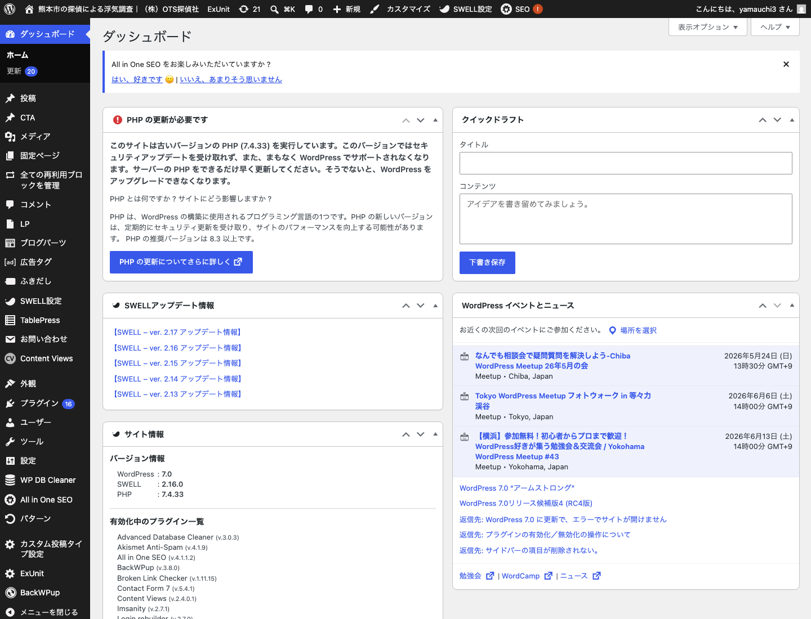
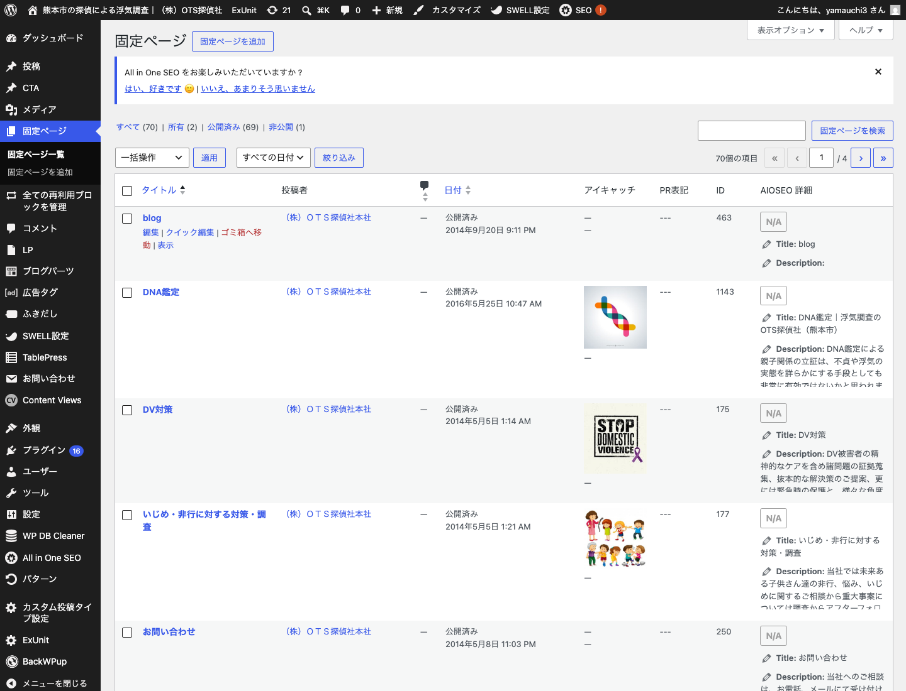
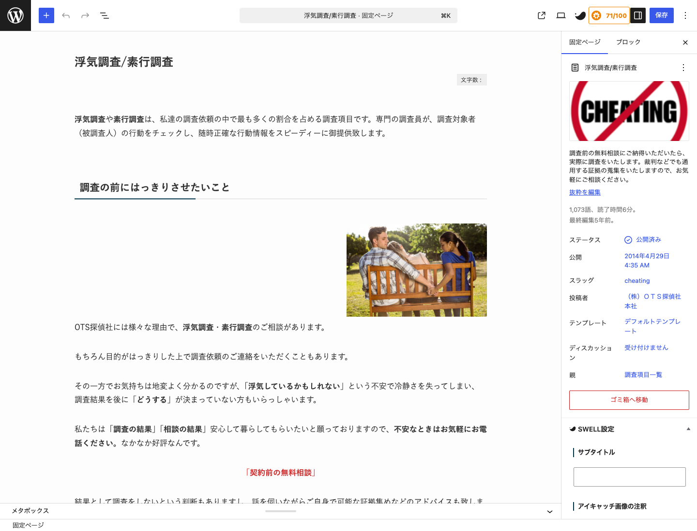
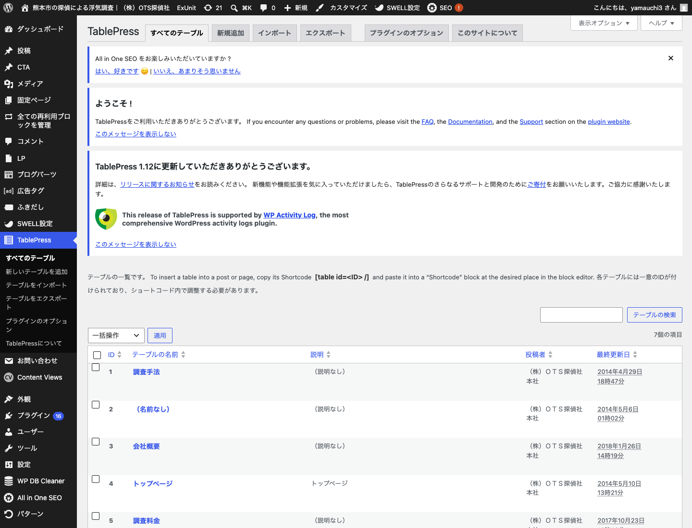
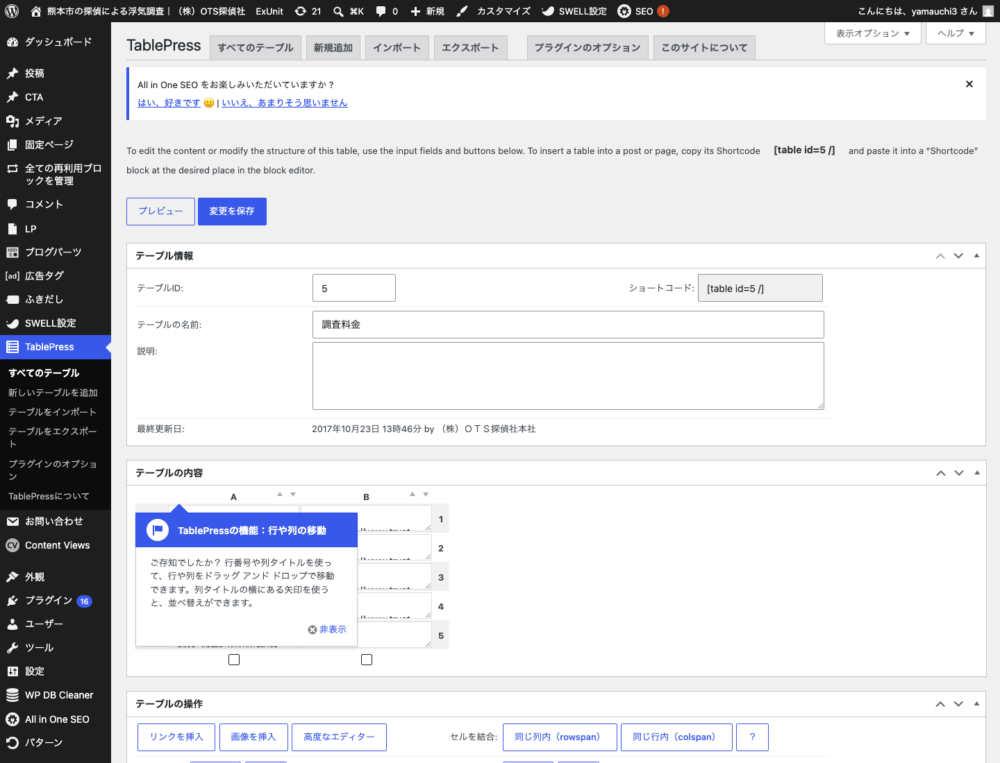
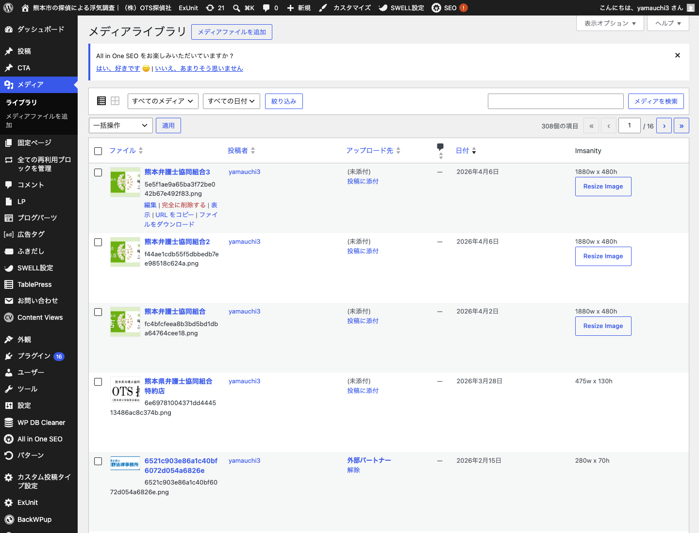
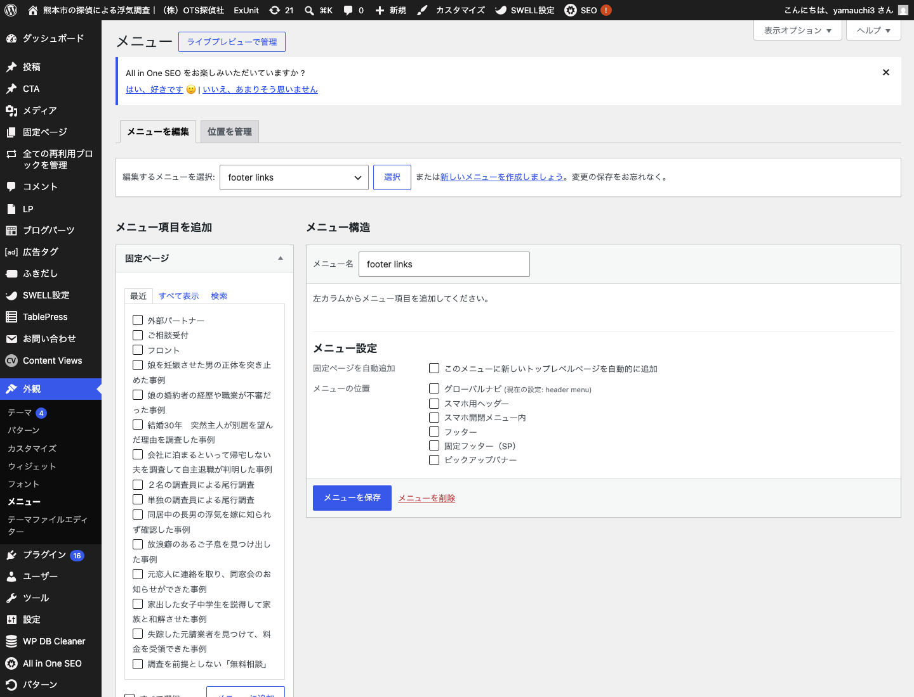
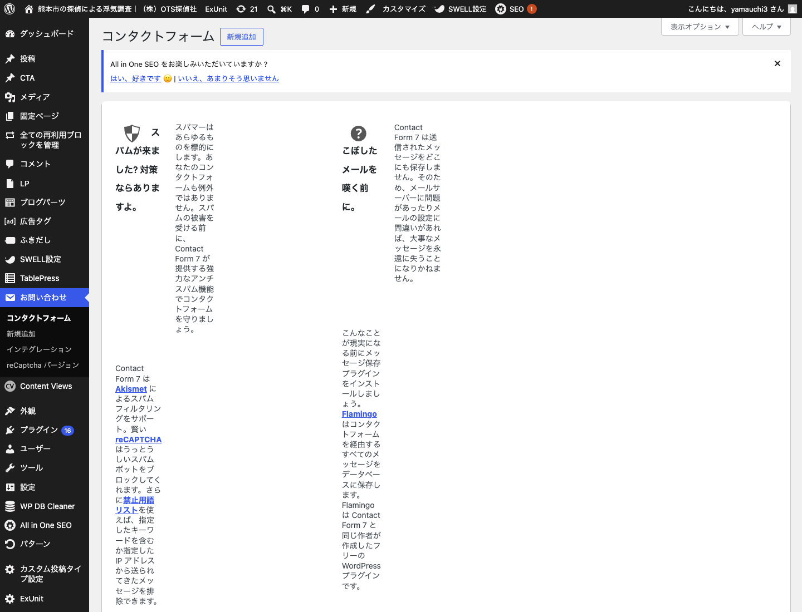

管理画面のかんたん編集（Part A）＋ テーマ・コード構造の詳細（Part B）
※ このマニュアルは編集作業のためのものです。ログインID・パスワード等の認証情報は、安全のため本書には記載していません（別途お渡しします）。
このマニュアルは、株式会社OTS探偵社さまのウェブサイト（WordPress）を、なるべくご自身で編集していただけるようにまとめたものです。Part A は専門知識がなくても操作できる範囲、Part B は HTML/CSS が分かる方がテーマ本体まで編集するための技術解説です。
「文章を直す」「料金を直す」「画像を変える」だけなら Part A の 1〜5 を読めば十分です。デザインや色・レイアウトに関わる部分（トップページの構造・フッター・テーマの色など）は、崩れやすいため Part B をご確認のうえ慎重に行ってください。
| 編集したい内容 | ご自身で 編集OK | 慎重に／ ご相談推奨 | 該当章 |
|---|---|---|---|
| 固定ページ（各サービス紹介・会社情報など）の文章 | ○ | A-2 | |
| 料金表の数値・項目 | ○ | A-4 | |
| ページ内の写真・画像の差し替え | ○ | A-5 | |
| メニュー（ナビ）の項目・並び順 | ○ | A-6 | |
| お問い合わせの通知先メールアドレス | ○ | A-7 | |
| トップページのデザイン構造（ファーストビュー等）の文章・体裁 | 要注意 | A-3 / B-5,6 | |
| フッターの会社情報・探偵業届出番号 | 要注意 | B-8 | |
| サイト全体の色・フォント・余白（テーマ／CSS） | 要注意 | B-2,3 | |
| プラグインの追加・削除・有効/無効 | ご相談 | A-8 | |
| パーマリンク（URL）設定／テーマの切替 | 触らない | A-8 |
※「要注意」「ご相談」の項目は、操作を誤るとページ全体の表示が崩れたり、検索順位（SEO）に影響したりする可能性があります。
https://trust-supply.com/wp-login.php を開きます。

編集中はこまめに保存（更新）しましょう。作業を終えたら、右上のユーザー名 →「ログアウト」で安全に終了できます。
各サービスの紹介ページや会社情報などは「固定ページ」として管理されています。文章の修正はここから行います。


見出しの色やオレンジの線などの見た目はテーマが自動で付けています。文章だけを書き換えれば、デザインはそのまま保たれます。書式（色・サイズ）を手動で変えると、サイト全体の統一感が崩れる場合があります。
誤字の修正、文章の追記・差し替え、段落の追加など。保存後すぐにサイトへ反映されます（反映されない時は A-9 のキャッシュ対処を参照）。
トップページ（ホーム）は、ファーストビューの縦書きメッセージ・調査メニュー・選ばれる理由・料金など、専用にデザインされた特別な作りになっています。固定ページ「ホーム」の本文に専用のHTML（部品）が入っており、テーマのCSSと組み合わさって表示されています。
HTML/CSS の知識がない場合は、トップページの編集は慎重に行ってください。誤って部品（タグ）を消すと、その区画が表示されなくなることがあります。元に戻せるよう、編集前の本文（HTML）を控えておくと安全です。
HTML/CSS が分かる方は、Part B-5・B-6 に構造を詳しく記載しています。そちらをご覧ください。
なお「料金の数字を直したい」は A-4（TablePress）でご自身で編集できます。「ファーストビューの文言を変えたい」など構造に関わる部分は、Part B-6 の構造解説をご覧ください。
料金などの表は「TablePress」というプラグインで管理されています。表計算ソフトのように、セル単位で編集できます。


同じ表が複数のページに表示されている場合があります。表を直すと、その表を使っているすべてのページに反映されます。料金改定の際は、ページ本文側にも金額の記載がないかご確認ください。

メディアの画像を「完全に削除」しないでください。その画像が他のページで使われている場合、そのページの画像が表示されなくなります（リンク切れ）。差し替えたい時は「削除」ではなく上記の「置換」または新規アップロードを使ってください。
画面上部のナビゲーションや、フッターのリンク一覧は「メニュー」で管理されています。

メニューから項目を「削除」しても、ページ自体は消えません（メニューに表示されなくなるだけ）。ページごと消したい時は A-2 の固定ページ側で行います。
フッターの会社情報・届出番号はメニューではなくテーマ側で表示しています（B-8参照）。メニュー編集では変更できません。
お問い合わせフォームの送信内容が届くメールアドレスは「Contact Form 7」で設定します。

フォーム本文に書かれた [your-name] [your-email] のような角カッコのタグは消さないでください。お客様の入力内容が届かなくなります。変えるのは原則「送信先」メールアドレスのみにしてください。
送信完了は GA4（アクセス解析）で「お問い合わせ完了」として計測されています（B-10参照）。フォームの項目自体を変えると計測がずれる場合があるため、項目変更は慎重に行ってください。
以下は、操作を誤るとサイト全体が表示されなくなったり、検索順位や問い合わせに影響する可能性がある箇所です。変更したい場合は、必ず事前にバックアップを取り、慎重に行ってください。
| 場所 | 理由 |
|---|---|
| 「外観」→「テーマ」の切替・削除 | デザインがすべて失われます。現在のテーマは「SWELL CHILD（子テーマ）」が正です。 |
| 「外観」→「テーマファイルエディター」 「カスタマイズ」内のコード/追加CSS | サイト全体のデザインを制御しています。誤編集で全ページが崩れる恐れ。 |
| 「設定」→「表示設定」 「設定」→「パーマリンク」 | トップページ指定やURL構造が変わると、全ページのURLが変化し、SEO・外部リンク・ブックマークが無効になります。 |
| 「プラグイン」の削除・有効/無効の切替 | SWELL／TablePress／Contact Form 7／SEO 等は表示・フォーム・計測に必須です。 |
| フッターの会社情報・探偵業届出証明書番号 | 探偵業法 第10条の表示義務に関わる項目です（B-8）。 |
| WordPress本体・テーマ・プラグインの「更新」通知 | 更新自体は重要ですが、まれに表示崩れが出ます。実行前に一報いただけると安全です。 |
| 症状 | 対処 |
|---|---|
| 保存したのにサイトに反映されない | 表示の一時保存（キャッシュ）が原因のことが多いです。数分待つ、またはブラウザを「スーパーリロード」（Mac: ⌘+Shift+R／Win: Ctrl+F5）してください。 |
| 編集後に画面が崩れた／真っ白 | 直前の操作を取り消します（編集画面なら ⌘/Ctrl+Z）。保存していなければ、保存せず画面を離れれば元に戻ります。 |
| 誤ってページや画像を消した | 慌てず、まずは「ゴミ箱」を確認します（固定ページ・メディアともゴミ箱から復元できます）。バックアップからの復旧も可能です。 |
判断に迷う操作は、行う前に必ずバックアップ（さくらのバックアップ＆ステージング、または BackWPup）を取得してから進めてください。重要な変更の前には、現在の状態を控えておくと安心です。
ここから先は、HTML/CSS（および WordPress テーマ）の知識がある方が、テーマ本体まで編集するための技術解説です。
本サイトは有料テーマ SWELL を親テーマとし、その上に 子テーマ「SWELL CHILD」（ディレクトリ名 swell_child）を作成して、サイト固有のデザイン・機能を実装しています。SWELL 本体はアップデートで上書きされるため、カスタマイズはすべて子テーマ側に置く「子テーマ方式」を採用しています（＝SWELLを更新してもカスタマイズは消えません）。
| レイヤー | 役割 |
|---|---|
| SWELL（親テーマ） | WordPressテーマの土台。ヘッダー/フッター/投稿テンプレート/ブロック等の基本機能。直接編集しない。 |
| SWELL CHILD（子テーマ） | 本サイト固有の配色・書体・レイアウト・トップページ・フッター・計測タグ等。編集対象はここ。 |
| 固定ページ本文（DB） | 各ページの文章。トップ（ホーム）は専用HTML部品を本文に保持。テーマCSSと組み合わせて表示。 |
「2014年製のクラシックHTMLで作られた既存ページ」を、子テーマCSS（.post_content への一括スタイル）でまとめて今のデザインに寄せる方式を取っています。本文HTMLは極力書き換えず、見た目はCSSで制御しています。
子テーマ swell_child/ の構成は次の通りです（サーバー上のパス：/wp-content/themes/swell_child/）。
# /wp-content/themes/swell_child/ swell_child/ ├── style.css … 全デザイン（トークン定義＋セクション §1〜§H）。テーマ情報ヘッダも兼ねる ├── functions.php … 機能（CSS読込・favicon・GA4・CF7計測・1カラム化・フッター/ヘッダー注入） ├── parts/ │ └── ots-footer.html … フッターのHTML（pre-CTA帯＋会社情報＋探偵業届出番号＋リンク） └── assets/ ├── ots-logo.png … ヘッダーの会社ロゴ（探偵犬マスコット＋社名） ├── fv-bg-city.jpg … ファーストビュー背景（熊本市街・現行） ├── fv-bg-dark.jpg … 旧FV背景（和室・未使用） ├── fv-a.jpg / fv-bg.jpg … 旧FV背景候補（未使用） ├── favicon-32.png … ファビコン（32px） ├── favicon-180.png … Apple touch icon（180px） └── favicon-192.png … ファビコン（192px）
編集の中心は style.css と functions.php の2ファイル、必要に応じて parts/ots-footer.html です。
配色と書体は style.css 冒頭の :root に CSS変数で集約しています。ここを変えるとサイト全体に反映されます。
:root {
--ots-primary: #E87309; /* メインのオレンジ（ボタン/見出し罫/帯/アクセント） */
--ots-deep: #972C00; /* 締めの濃いオレンジ（大見出し文字色など） */
--ots-cream: #FFFBF0; /* 背景の生成り */
--ots-cream-2: #F5EFE2; /* セクション交互の背景 */
--ots-gold: #DEA57D; /* 見出し下線などの細い金茶罫 */
--ots-body: #1A1A1A; /* 本文テキスト色 */
--ots-font: "Klee One", ...; /* 確定書体（教科書体＝Klee One） */
}
style.css は番号付きセクションで構成されています。改修の履歴上、後半（§A〜§H）は前半セクションを !important で上書きして最新仕様を反映しています。同じ要素を編集する時は、後ろのセクションほど優先される点に注意してください。
| セクション | 担当 |
|---|---|
| :root | 配色・書体トークン |
| §1 / §1b | ヘッダー帯、ヘッダー右CTA（電話＋無料相談 .ots-hcta） |
| §2 | ページタイトル・パンくず |
| §3 | 本文 .post_content 一括スタイル（見出し/段落/リスト/画像/表）＝全下層ページの見た目はここ |
| §4 | ボタン（WP/SWELLボタンブロック） |
| §5 | フッター＋pre-CTA帯＋探偵業届出番号枠（.ots-footer 系） |
| §6 | ファーストビュー（FV）基本（.ots-fv 系・縦書き） |
| §7 | フロントページのSWELL既定UI抑止＋FVフルブリード |
| §8 | トップページ各セクション（.ots-sec / カード / 流れ / 料金 / CTA帯） |
| §9 | 長文ページの可読化オプション（既定OFF・body.ots-readable） |
| §A | ヘッダー白化＋公式ロゴ画像化（移管時） |
| §B | FV縦書きの自然フロー化＋モバイルは横書きへ |
| §C | 調査メニューカードの中央揃え |
| §D | モバイル不具合修正（SPヘッダーCTA非表示・カードアイコン視認化・料金表横スクロール・理由カード） |
| §E | FVのCTAボタン＋モバイルFV調整 |
| §F | （旧）短見出しFV＋濃い背景。現在は §H で上書き |
| §G | （旧）代表挨拶のPC縦書き。現在はFVに統合済 |
| §H | 最新：クライアント修正反映（FV背景=市街写真＋暗スクリム×白文字／梅木縦書き＋3バッジ／明るいオレンジ／ヘッダー隙間詰め／CTA横並び） |
FVや配色は §6/§F/§H のように複数セクションで触れています。挙動を変えたい時は、まず最後（§H）に該当ルールがないかを確認し、無ければ §H の末尾に追記するのが安全です（後勝ち）。
基本は :root のトークンを書き換えるだけで全体に反映されます。例：メインオレンジをさらに変えるなら --ots-primary の値を変更します。
ただし一部のボタン等は、過去の上書き（§D・§H）で --ots-primary を !important 直書きしている箇所があります（例：ヘッダー無料相談ボタン .ots-hcta__form）。トークンを変えても変わらない要素があれば、§H 付近の該当ルールを確認してください。
本文書体「Klee One（教科書体）」は functions.php の wp_enqueue_style で Google Fonts から読み込み、:root --ots-font で適用しています。書体変更は両方（読み込みURLとトークン）の修正が必要です。
// functions.php（抜粋） wp_enqueue_style( 'ots-klee-one', 'https://fonts.googleapis.com/css2?family=Klee+One:wght@400;600&display=swap', array(), null );
子テーマの機能はすべて functions.php のフックで実装しています。SWELLのヘッダー内にHTMLを差し込むPHPフックが無いため、ヘッダーのロゴ・CTAは JavaScriptでDOMに注入しています（後述 B-7）。
| フック / 関数 | 役割 |
|---|---|
wp_enqueue_scripts | Klee One フォント＋子テーマ style.css の読み込み（親テーマの後） |
wp_head（preconnect） | Google Fonts への事前接続（初期表示高速化） |
wp_head（favicon） | ファビコン（32/192）＋Apple touch icon（180）の <link> 出力 |
wp_head（GA4） | GA4 計測タグ gtag.js（測定ID G-R4QNT2LK2X） |
filter: swell_is_show_sidebar | 全ページ1カラム化（サイドバー非表示）。SWELL公式フィルタ |
wp_footer（フッター出力） | parts/ots-footer.html を読み込んで出力（B-8） |
wp_footer（CF7→GA4） | フォーム送信完了 wpcf7mailsent を捕捉し GA4 イベント generate_lead を送信（B-10） |
wp_footer（ヘッダー注入JS） | ヘッダーへ .ots-hcta（電話＋無料相談）を挿入＋ロゴを公式画像に置換（B-7） |
SWELLのヘッダーバー内に直接HTMLを差し込むPHPフックが提供されていないため、wp_footer で出力したJSが .l-header__inner を見つけて要素を追加する方式を採っています。読み込み直後に一瞬要素が無い状態（FOUC）が起こり得ますが、機能上の問題はありません。
トップページは「固定ページ『ホーム』の本文」＋「子テーマCSS（§6〜§8・§H）」の2つで成り立っています。
.ots-fv（FV）／.ots-sec（各セクション）／.ots-card（調査メニュー）／.ots-reason（選ばれる理由）／.ots-flow（流れ）／.ots-price（料金）/.ots-cta（CTA帯）などの専用クラスHTMLを保持。.ots-* は子テーマ style.css の §8（と §6/§H）でデザイン。.post_content 配下に入るため、§3 の本文一括スタイルに負けないよう .post_content .ots-* と詳細度を上げています。site/local-staging/home-content.html に保管。サーバー反映時はこの内容を固定ページ「ホーム」の本文（カスタムHTML）に貼り付けています。トップの構成順：FV（梅木代表メッセージ・縦書き）→ 調査メニュー6種 → 選ばれる理由4 → ご相談の流れ4 → 料金（一例）→ CTA帯。各セクションは left:50%; margin-left:-50vw; width:100vw で画面全幅（フルブリード）に広げています。
トップの文章を変える場合、固定ページ「ホーム」をHTMLとして編集します（クラスやタグ構造を壊さないこと）。クラス名を消すとそのセクションのデザインが外れます。構造ごと変えたい場合は home-content.html 側で編集してから貼り直すと安全です。
FVは「3バッジ＋梅木代表メッセージの縦書き」を、客提供の熊本市街写真に暗いスクリム（覆い）を重ねた背景の上に白文字で表示しています。
<section class="ots-fv">
<div class="ots-fv__inner">
<div class="ots-fv__badges">
<span class="ots-fv__badge">熊本県弁護士協同組合特約店</span>
<span class="ots-fv__badge">熊本県公安委員会届出 第93090018号</span>
<span class="ots-fv__badge">創業20年以上</span>
</div>
<div class="ots-fv__vertical"> <!-- writing-mode: vertical-rl（右→左） -->
<p class="ots-fv__block ots-fv__lead"> … </p>
<p class="ots-fv__block ots-fv__call"> … </p>
<p class="ots-fv__block ots-fv__close"> … </p>
<p class="ots-fv__block ots-fv__sign">…<span class="ots-fv__sign-name">代表 梅木 栄二</span></p>
</div>
</div>
</section>
--ots-fv-bg-city（assets/fv-bg-city.jpg）＋暗いグラデーションのスクリムを重ね、白文字を読めるようにしている（§H）。背景を変える時はこの変数と画像を差し替え。writing-mode: vertical-rl。HTMLの先頭ブロックが画面の右に来る（右→左の読み順）。PCは縦書き、モバイル（≤880px）は横書きに自動切替（§B/§H・狭い画面で縦書きが見切れるのを防ぐため）。.ots-fv__badge）。バッジ中の「第93090018号」は探偵業法に基づく表示です。文言変更は必ず確認のうえ行ってください（B-8も参照）。
ヘッダーは SWELL 標準のヘッダーバーをベースに、子テーマで次の3点をカスタムしています。
.l-header__inner 等の背景を白に上書き（SWELLは .l-header__inner に色を当てるため、ここを白に）。ナビ文字は濃色に。functions.php のJSで .c-headLogo__link の中身を公式ロゴ画像（assets/ots-logo.png）に置換。.ots-hcta（電話 0120-556-624＋無料相談ボタン）を .l-header__inner 末尾に挿入。配色・横並びは §1b/§H。モバイル（≤880px）は §D で非表示（ハンバーガーメニュー＋本文内CTAで代替）。注入JSの該当部（functions.php・wp_footer）：
var html = '<div class="ots-hcta"><a class="ots-hcta__tel" href="tel:0120556624">0120-556-624</a>' + '<a class="ots-hcta__form" href="/contact">無料相談</a></div>'; document.querySelectorAll('.l-header__inner, .l-fixHeader__inner').forEach(...inject...); // ロゴ置換 document.querySelectorAll('.c-headLogo__link').forEach(... img.ots-logo-img ...);
ヘッダーの色やロゴは本来 SWELL の「カスタマイズ」でも設定可能ですが、本サイトは確定デザインを忠実に再現するため子テーマ側（CSS＋JS）で固定しています。カスタマイザーで設定すると競合する場合があるため、ヘッダー変更は子テーマ側で行ってください。
フッターは SWELL既定フッターを非表示（§5の #footer.l-footer{display:none}）にし、子テーマの専用フッターで置換しています。HTMLは parts/ots-footer.html、出力は functions.php の wp_footer、配色は §5。
構成：pre-CTA帯（.ots-precta・全幅オレンジの相談誘導）＋本体フッター（.ots-footer・会社情報／探偵業届出番号／サイトメニュー／法務リンク）。
parts/ots-footer.html 内 .ots-footer__license の「第93090018号（熊本県公安委員会）」は、探偵業法 第10条に基づく標識（表示）義務に該当します。削除・改変しないでください。会社情報（住所「法務ビル202号」／電話）も確定値です。変更が必要な場合は必ず制作と確認のうえ行ってください。
フッターのリンクは本番の pretty URL（末尾スラッシュ無し）前提です。スラッグ変更時はここのリンクも要修正。
@media (max-width: 880px)（モバイル）。一部 768px（表の横スクロール）も使用。@media）。.ots-hcta）はモバイルで非表示（§D）。アクセス解析は GA4（測定ID G-R4QNT2LK2X）。functions.php の wp_head で gtag.js を読み込み、全ページのPVを計測します。
お問い合わせフォーム（Contact Form 7）の送信完了は、CF7が発火する wpcf7mailsent イベントを捕捉し、GA4イベント generate_lead として送信＝問い合わせ完了をコンバージョン（CV）計測しています。
document.addEventListener('wpcf7mailsent', function(e){ gtag('event', 'generate_lead', { event_category:'contact', ... }); });
GA4管理画面で generate_lead を「キーイベント（旧コンバージョン）」に指定すると、問い合わせ完了数が計測されます。フォーム項目を大きく変える場合は計測条件の見直しが必要です。
テーマファイル（style.css / functions.php / parts/ / assets/）を変更したら、FTPでサーバーの該当パスへアップロードします。
| サーバー | さくらのレンタルサーバ スタンダード |
|---|---|
| テーマのパス | ~/www/ots/wp-content/themes/swell_child/ |
| FTP接続情報 | 別途お渡し（FTPホスト／アカウント／パスワード） |
| 反映確認 | アップロード後、ブラウザをスーパーリロード（キャッシュ回避）して確認 |
style.css はファイル更新時刻でキャッシュバスティングしているため（functions.php の filemtime）、上書きすれば自動で新CSSが読み込まれます。本番ファイルを差し替える前に、必ず現行ファイルを控える／サーバーのバックアップ（さくらのバックアップ＆ステージング、または管理画面の BackWPup）を取得してください。
style.css の :root --ots-primary を変更 → FTPで style.css をアップ。変わらない要素は §H 付近の !important 直書きを確認。
管理画面で固定ページ「ホーム」をHTML編集 →.ots-fv__block 内のテキストを変更（クラス・タグは残す）。または home-content.html を編集して本文へ貼り直し。
新しい画像を assets/ に置き、§H の --ots-fv-bg-city のファイル名を差し替え → FTPで style.css と画像をアップ。スクリムの濃さは §H の linear-gradient(...) の不透明度で調整。
parts/ots-footer.html を編集 → FTPでアップ。探偵業届出番号は確認のうえ。
現在は .ots-card__icon 内のインラインSVG。画像に変える場合はSVGを <img> に置換し、.ots-card__icon のサイズ指定を調整。
!important の積層：style.css は改修履歴が積み重なっており、同じ要素を複数セクションで上書きしています。狙い通り効かない時は、より後ろ（§Hなど）の同名ルールを確認。新規上書きは末尾追記が安全。.post_content 一括CSS（§3）で制御しています。本文構造を変えると個別調整が必要になります。本マニュアルは、テーマ・コード構造を編集できる方への引き継ぎを想定しています。FTP上書き・DB編集・パーマリンクなど影響範囲の大きい操作は、必ずバックアップを取得してから実施してください。